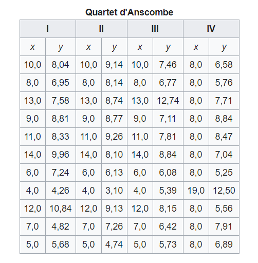

Quartet d'Anscombe
Le Quartet d'Anscombe est constitué de quatre ensembles de données qui ont les mêmes propriétés statistiques simples mais qui sont en réalité très différents, ce qui se voit facilement lorsqu'on les représente sous forme de graphiques. Ils ont été construits en 1973 par le statisticien Francis Anscombe dans le but de démontrer l'importance de tracer des graphiques avant d'analyser des données, car cela permet notamment d'estimer l'incidence des données aberrantes sur les différentes indices statistiques que l'on pourrait calculer (Définition Wikipédia).
Cette visualisation met en parallèle le Quartet avec la musique (vocabulaire, parallèle entre la partition et le graphique, Quartet musical et quatre graphiques dans la visualisation d'Anscombe)